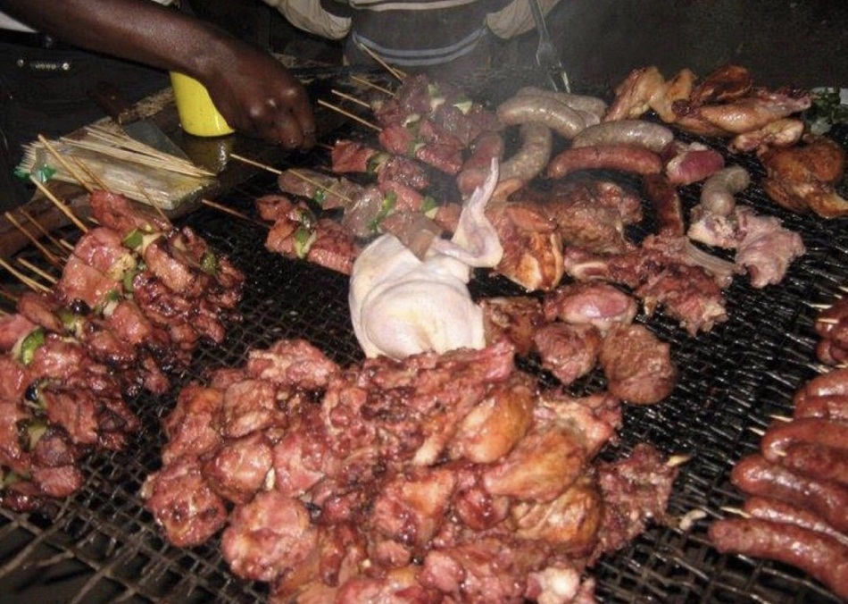

MYLOCAL-FOOD.KITOKO
Congolese foods
Congo is a Central African country that is rich in natural resources....
Lituma
Le Banane Plantain
Le Fufu Au Mbizo
Le Sombe melanger Au Haricot(Sakamadesu)
Fumbwa Au Poisson
Le Riz Au Sombe
Le Banane Plantain Au Sombe
Explore the diverse and flavorful traditional Congolese foods
Each dish has its own story, with ingredients and cooking techniques passed down through generations. These dishes combine meat, fish, vegetables, and starches, representing the diversity and richness of the country. So, immerse yourself in the delicious and vibrant world of foods in Congo.
Enjoy Our Local Food
Street Foods
Liboke
Liboke is a fish dish popular in Congo. Fish, along with tomato, chili, and salt, is wrapped in banana leaves and grilled..
It has a delicious taste and an authentic aroma..
Chikwanga Na Ntaba Yako Tumba
Chikwange is prepared with cassava,prepared by wrapping the flour balls in banana leaves and steaming them. &Grilled Goat
It has a delicious taste and an authentic aroma.

Ngulu Yako Tumba
Grilled pork or goat meat. This is a popular street food in the country..
The smoky taste of the meat is often coupled with a few accompaniments like grated cheese and salad.is a popular Congolese dish prepared with smoked pork meat. The meat pieces are cut and seasoned.